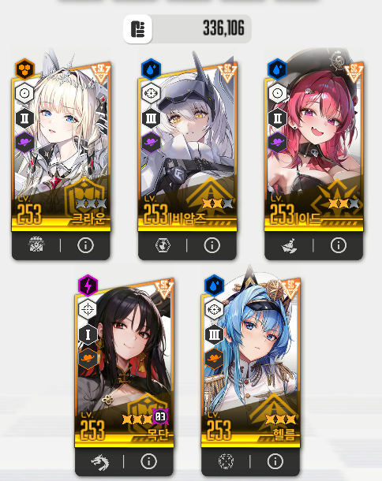

분신 안잡고 클리어 했다니까 누가 공략부탁하길래 간단하게 적음

사용조합 및 투력 : 목단(애3) 크라운 각설 애헬름(애3) 메스트 336K
갤이나 다른곳에 검뱀공략 많이 올라와있어서 주절주절 안적고 내가 쓴 방법만 적음
나도 여러공략보고 들이박으면서 깬거라 자기한테 맞는 공략을 찾어봐
요약은 2:55초에 헬름선버 > 속성저지 최대한 딜하다가 마지막에 저지 > 십자저지때 시간 끌어서 버스트 소모 >
분신은 처음에 크라운 무적 도발로 버티다가 버스트키고 기도하면서 버스트 존나 누르고 딜하기 끝
(목소리 녹음되서 소리 날렸고 영상 1:50~2:10에 잠시 다른거하느라 esc눌러져있는데 패스하셈)
최초 버스트는 2:55초쯤에 켜서 패턴중에 레이저쏘는거 안정적으로 넘길꺼고 헬름을 먼저 사용함
특이사항없이 쭉 버스트 쓰다가 십자 저지패턴에 크라운 + 헬름 버스트 키고 약간 시간 지연시켜서 패턴넘김
그리고 십자패턴 저지 후 자동공격 풀고 크라운 잡고 스택관리 시작(19에서 대기) 및 메스트+각설로 딜몰아줌
이제 분신머리 2개올라오는데 올라오고 살짝만 텀주고 크라운 도발 시작
그럼 크라운 무적도발 쓸때 아까 풀버가 끝나는데 크라운 무적시간(5초) 최대한 써먹고 다음 버스트눌러서 분신 지속시간 갉어먹어야됨
그럼 이제는 자동공격 다시키고 각설이잡고 버스트 쿨돌아오면 바로 버스트 칼같이 켜줌
이제 핵심은 분신사라지고 브레스 패턴날아오기전에 헬름 버스트를 키는것
헬름버스트로 브레스버티면 이후 속성저지 > 십자저지 > 분신등장 반복이니까 그냥 기도하면서 존나 패셈 ㅅㅂ ㅋㅋㅋㅋㅋㅋㅋ
궁금한거있으면 댓글로 적어줘 그러면 내가 알려줄수있는건 다알려줌
영상보면 너무 허접하게 잡았는데 그려려니하고 봐주셈 ㅠㅠ